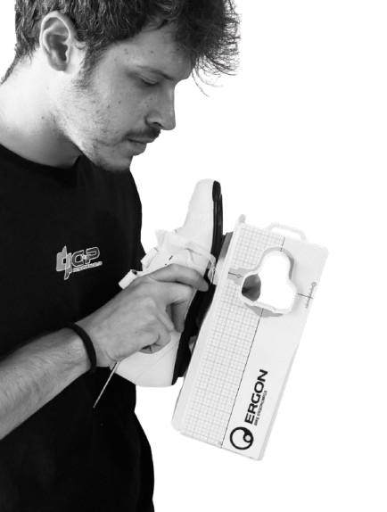
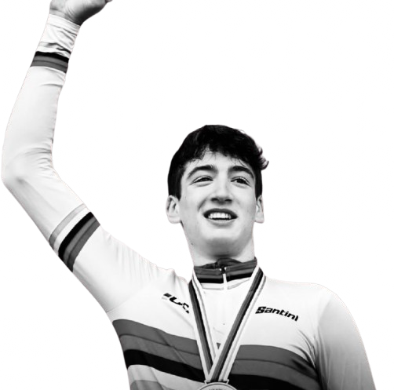

Percorsi scientifici di Return to Play per atleti e protocolli specialistici di Bike Fitting & Messa in Sella per il ciclismo in Friuli.

Analisi Strumentale
Precisione micrometrica per l'assetto in sella
Rispondi a 3 brevi quesiti per individuare il protocollo chinesiologico o biomeccanico più adatto.
Soluzioni personalizzate per atleti e appassionati di ciclismo a Nimis, Udine e dintorni.
Il ponte fondamentale tra la fase fisioterapica e il rientro agonistico sul campo per qualsiasi disciplina sportiva.
Analisi accurata del binomio atleta-bicicletta per ottimizzare l'efficienza di pedalata ed eliminare i dolori da sovraccarico.
Un percorso strutturato in 4 fasi per garantirti risultati concreti, misurabili e duraturi nel tempo.
Inquadramento clinico e sportivo. Analisi dello storico infortuni, volumi di allenamento e degli obiettivi specifici del singolo atleta.
Analisi biomeccanica, test della mobilità articolare e rilievo dei compensi motori attraverso video-analisi e strumentazione di precisione.
Regolazione micrometrica della bici (Bike Fitting) o somministrazione del protocollo di riatletizzazione campo/studio (Return to Play).
Verifica sul campo delle sensazioni e adattamenti nei giorni successivi, con supporto continuo via WhatsApp e reportistica dettagliata.
I risultati ottenuti applicando i nostri protocolli ad atleti agonistici e amatori.
Problema: Ciclista amatore con forte bruciore al ginocchio destro dopo 50km.
Intervento: Correzione tacchette e quota sella di +6mm.
Risultato: Azzeramento del dolore anche in uscite oltre i 100km.

Performance Agonistica
Supporto ad Atleti di Alto Livello
Problema: Recidiva al bicipite femorale e timore nei cambi di direzione.
Intervento: Test di forza e 5 settimane di riatletizzazione specifica.
Risultato: Rientro in gara con parametri di forza simmetrici.
Le sessioni si svolgono presso lo Studio Fisioterapico Valli del Torre a Nimis, facilmente raggiungibile da Udine, Cividale, Gemona e Tricesimo.